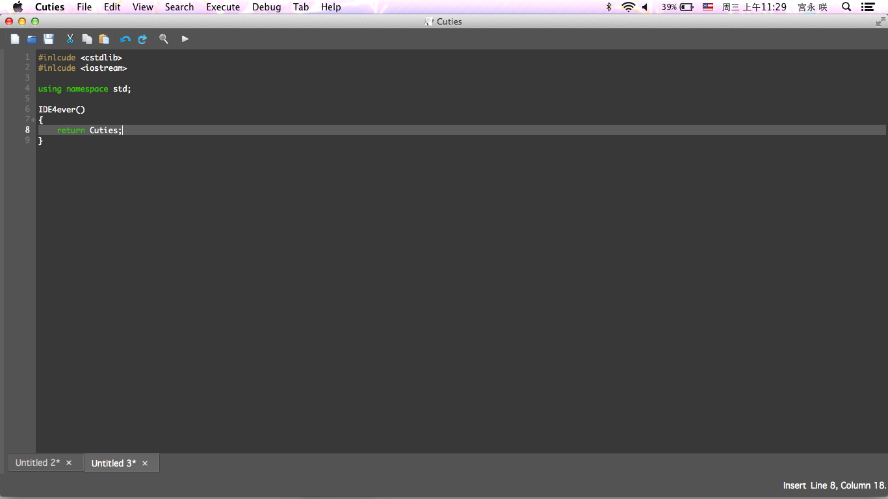

功能
最懂你的开发工具
众多的新特性让你的编码之路更加有趣，而且免费

调试
找出全部的Bug
全新的调试器工具，让你不止能找出程序的错误在哪里，更具有同时调试多个文件能力。调试控制面板、命令行输出还有变量查看工具都力求让调试变得更简单，更直接。尽情享受在Cuties中的调试吧，当然不要为了调试而增加bug！
全新的旧工具
你所熟悉的功能已焕然一新
Cuties具有和其他的开发环境一样的功能：代码编辑器、编译器和调试器。你会为这些与众不同的外观、更加易用的传统工具的出现感到惊讶。全新的界面旨在让你编写代码的过程充满乐趣。所有的控件也为能够让你专注工作而设计，提高你的工作效率。
让你的思维随时绽放
在你手边的设备上开始构想
Cuties能够让你在任何一台电脑上轻松的编写代码，因为Cuties是一个跨平台应用。无论是什么样的操作系统，你都能获得同样美妙的体验。现在开始用全新的方式写出令人惊讶的代码吧。
简洁
强大与简洁的统一
在我们向Cuties中添加越来越多功能的同时，我们更注重每一个功能的使用方式。我们坚信功能强大与使用简洁绝不对立。当你编写代码的时候，只有编辑器会出现于屏幕之上。 当你想要编译或者调试的时候，它们会自动出现。正如它们的界面，它们的使用亦是简单明了。
继续你的工作
留住你的每一个新的思维
Cuties能够记忆上次退出时的状态。当下一次打开Cuties的时候，所有的工具都在它原来的位置：光标的位置、标签的位置，甚至所有没有保存的新建文档也已经就位。Cuties将尽力留住你上次工作的状态，让你能够继续你的创作。